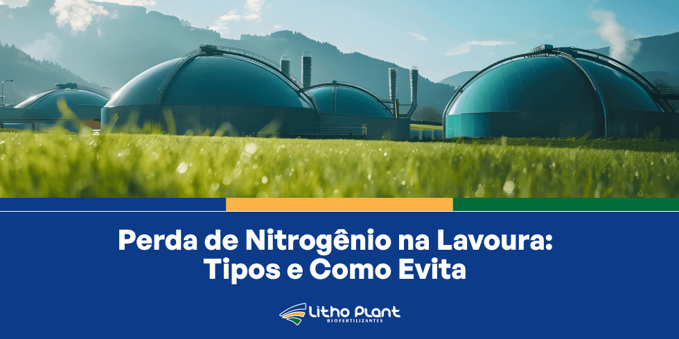
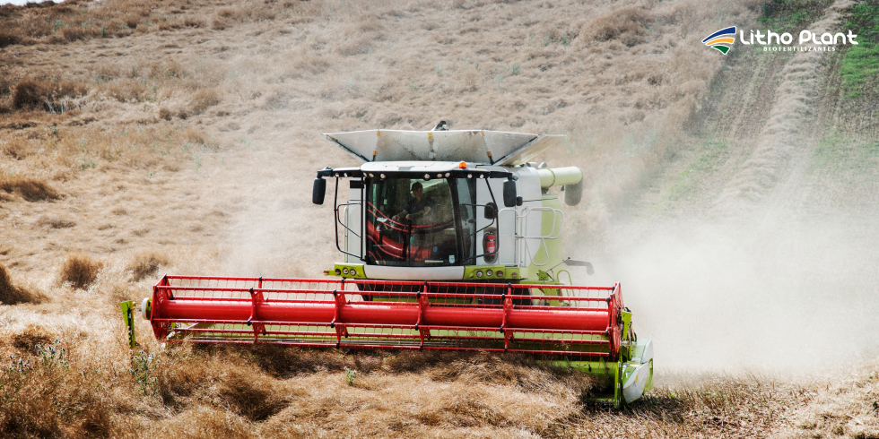
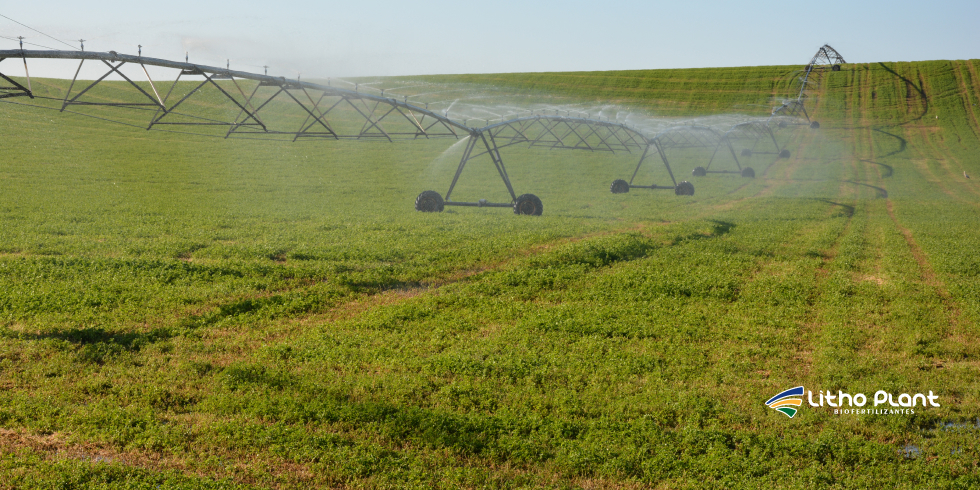

Perda de Nitrogênio na Lavoura: Tipos e Como Evitar

Manejo eficiente do nitrogênio é decisivo para unir produtividade elevada e sustentabilidade na lavoura.Na Litho Plant, indústria de biofertilizantes em Linhares, entendemos a importância do manejo eficiente do nitrogênio no solo para garantir uma produção agrícola sustentável e produtiva.
O nitrogênio é nutriente essencial para o crescimento das plantas, mas sua gestão adequada é crucial para evitar perdas que comprometem a produtividade.
A perda de nitrogênio na lavoura é um problema comum que pode reduzir significativamente a eficiência dos fertilizantes e afetar a produtividade das culturas, aumentando custos e reduzindo rendimentos.
Em um cenário em que eficiência e sustentabilidade são fundamentais para o sucesso, reduzir perdas de nitrogênio torna-se ainda mais estratégico.
Este artigo apresenta os principais tipos de perda de nitrogênio no solo e traz estratégias eficazes para evitá-las, com foco no uso de biofertilizantes de nitrogênio e em soluções desenvolvidas pela Litho Plant.
Tipos de perda de nitrogênio no solo
O nitrogênio é um dos nutrientes mais suscetíveis a perdas no ambiente de solo. As principais formas de perda de nitrogênio são lixiviação, volatilização e desnitrificação.
Lixiviação
A lixiviação ocorre quando o nitrogênio, geralmente na forma de nitrato, é lavado para camadas mais profundas do solo, ficando fora do alcance das raízes.
Esse processo é mais frequente em solos arenosos e em regiões com alta pluviosidade ou irrigação mal manejada.
Estudos de instituições de pesquisa brasileiras indicam que a lixiviação pode causar perdas significativas de nitrogênio, especialmente em culturas de ciclo curto e em solos com baixa capacidade de retenção.
Volatilização
A volatilização é a perda de nitrogênio na forma de amônia gasosa para a atmosfera.
Esse processo ocorre principalmente quando fertilizantes nitrogenados, como ureia, são aplicados na superfície do solo sem incorporação adequada.
A volatilização é mais intensa em condições de temperatura elevada, vento, baixa umidade e pH mais alto. Trabalhos acadêmicos mostram que, em condições desfavoráveis, até metade do nitrogênio aplicado como ureia pode ser perdido por volatilização.
Desnitrificação
A desnitrificação é a conversão do nitrato em gases nitrogenados, como nitrogênio gasoso (N₂) e óxido nitroso (N₂O), que são liberados para a atmosfera.
Esse processo ocorre em solos saturados com água, com pouco oxigênio e alta atividade microbiana.
Estudos de universidades federais brasileiras mostram que a desnitrificação pode representar perda importante de nitrogênio em áreas irrigadas ou com drenagem deficiente.

Lixiviação, volatilização e desnitrificação são processos que podem reduzir fortemente o aproveitamento do nitrogênio aplicado.Estratégias para evitar a perda de nitrogênio no solo
Para minimizar a perda de nitrogênio, é essencial adotar práticas que aumentem a eficiência do nutriente e reduzam as perdas para o ambiente.
Uso de biofertilizantes de nitrogênio
Os biofertilizantes de nitrogênio são alternativa eficaz para reduzir perdas e potencializar a disponibilidade do nutriente às plantas.
Esses produtos contêm microrganismos e compostos que favorecem a fixação biológica de nitrogênio e o melhor aproveitamento do nutriente no solo.
Na Litho Plant, há uma linha de soluções desenvolvidas para aumentar a eficiência do uso de nitrogênio, como o Gluta Phós 37, fertilizante mineral que contém aminoácidos, fósforo e nitrogênio para aplicação via solo e fertirrigação.
Estudos de instituições de pesquisa como a Embrapa indicam que o uso de biofertilizantes de nitrogênio pode reduzir lixiviação e volatilização, aumentando a disponibilidade do nutriente para as plantas e melhorando a produtividade.
Planejamento da adubação
Planejar bem a adubação é fundamental para minimizar a perda de nitrogênio no solo. Isso passa pela escolha do tipo de fertilizante, momento de aplicação e doses adequadas.
A adubação em cobertura com incorporação do fertilizante ao solo, por exemplo, ajuda a reduzir a volatilização e aumenta a eficiência de uso do nitrogênio.
Pesquisas em universidades como a UNICAMP apontam que aplicar fertilizantes nitrogenados em estádios críticos do desenvolvimento das plantas, como início do crescimento vegetativo e fase de floração, melhora a absorção e reduz perdas.
Manejo da irrigação
O manejo correto da irrigação é decisivo para evitar lixiviação e desnitrificação. Excesso de água favorece lixiviação e saturação do solo, aumentando perdas.
Sistemas de irrigação por gotejamento permitem fornecer a quantidade exata de água para as plantas, reduzindo a movimentação de nitrato no perfil e evitando encharcamentos prolongados.
Estudos de instituições como a UFLA mostram que a irrigação por gotejamento pode reduzir significativamente a lixiviação de nitrato em relação à irrigação por aspersão.
Uso de inibidores de urease e nitrificação
Inibidores de urease e nitrificação retardam a conversão do nitrogênio em formas mais sujeitas a perdas, como amônia e nitrato.
Esses produtos são aplicados em conjunto com fertilizantes nitrogenados, aumentando a eficiência de uso do nutriente e reduzindo perdas por volatilização e lixiviação.
Pesquisas da Embrapa indicam que inibidores de urease podem reduzir a volatilização de amônia em patamares elevados, enquanto inibidores de nitrificação reduzem a lixiviação de nitrato em solos e climas com maior risco de perda.
Produtos Litho Plant para reduzir a perda de nitrogênio
Gluta Phós 37
O Gluta Phós 37 é um fertilizante mineral que contém aminoácidos, fósforo e nitrogênio para aplicação via solo e fertirrigação.
Entre seus benefícios na lavoura estão a correção rápida de deficiências de fósforo, menor ligação aos colóides do solo e melhoria da recuperação das plantas após situações de estresse.
O produto também contribui para o fornecimento de energia (ATP) e disponibiliza aminoácidos destinados a processos de reserva de nitrogênio, estimulação e crescimento de raízes, além de atuar na síntese e ativação de clorofila, controle osmótico e formação de proteínas.
Lithamin Plus
O Lithamin Plus é um fertilizante mineral que contém biofertilizante composto por L-aminoácidos e nutrientes essenciais como zinco, boro, manganês, molibdênio, magnésio e nitrogênio prontamente disponíveis.
Com nutrientes de base nítrica e quelatados, o produto apresenta alta eficiência e velocidade de absorção, proporcionando maior vigor vegetativo às plantas.
Entre os benefícios estão o aumento da resistência a intempéries climáticas, auxílio na reversão de fitotoxidez e recuperação rápida das plantas após períodos de estresse.

Aliar manejo correto e soluções Litho Plant ajuda a reduzir perdas de nitrogênio e aproveitar melhor cada unidade de nutriente aplicada.Conclusão
A perda de nitrogênio no solo é um desafio importante para a agricultura, mas pode ser minimizada com práticas adequadas e uso de produtos eficientes.
Ao incorporar biofertilizantes de nitrogênio e fertilizantes especiais, como Gluta Phós 37 e Lithamin Plus, é possível aumentar a eficiência do uso do nutriente e melhorar a produtividade das lavouras.
Se você deseja saber mais sobre como reduzir a perda de nitrogênio no solo, entre em contato com a Litho Plant para agendar uma consulta e conhecer em detalhes as soluções disponíveis.
A equipe técnica está pronta para indicar o melhor manejo e os produtos mais adequados à sua realidade de campo, ajudando a garantir resultados consistentes e sustentáveis na sua produção agrícola.